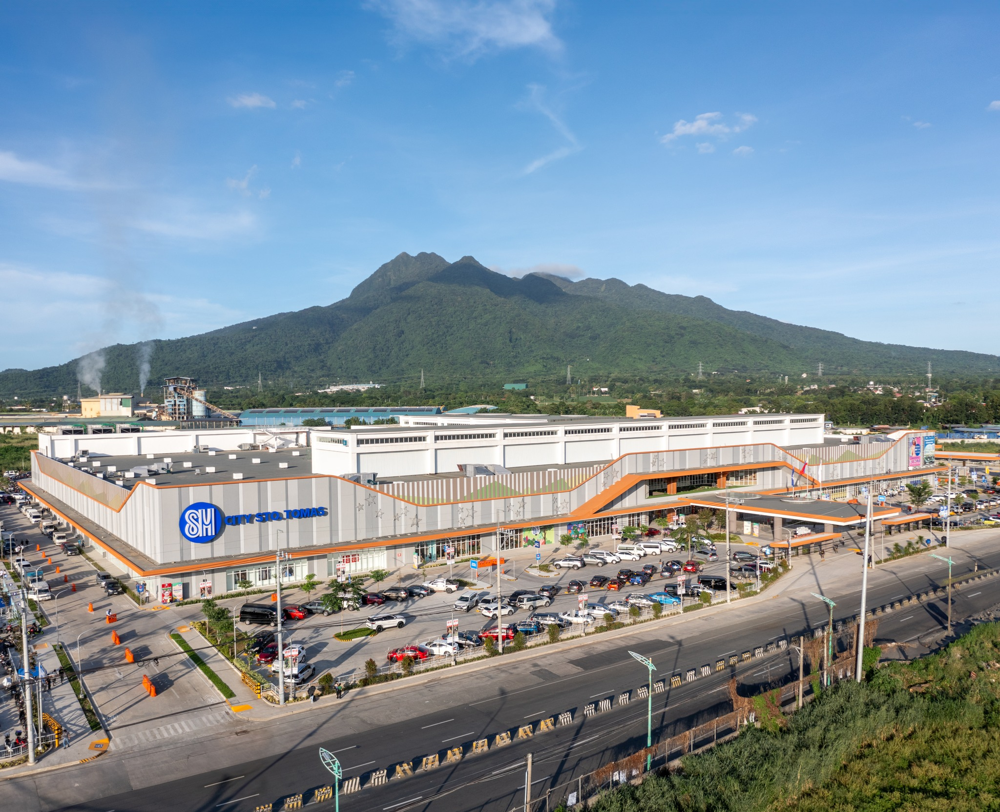
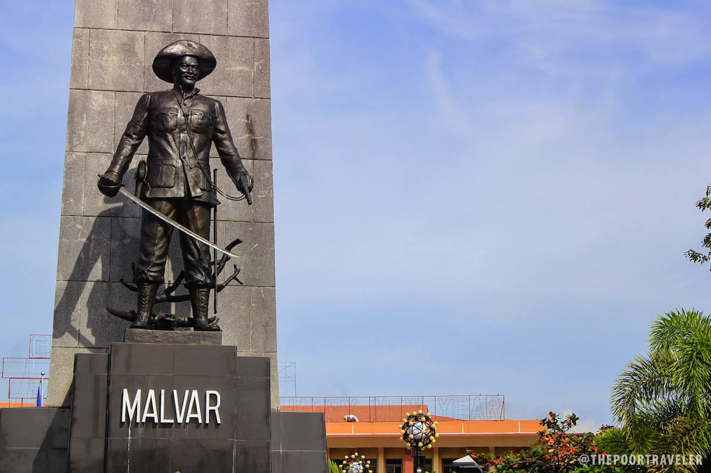
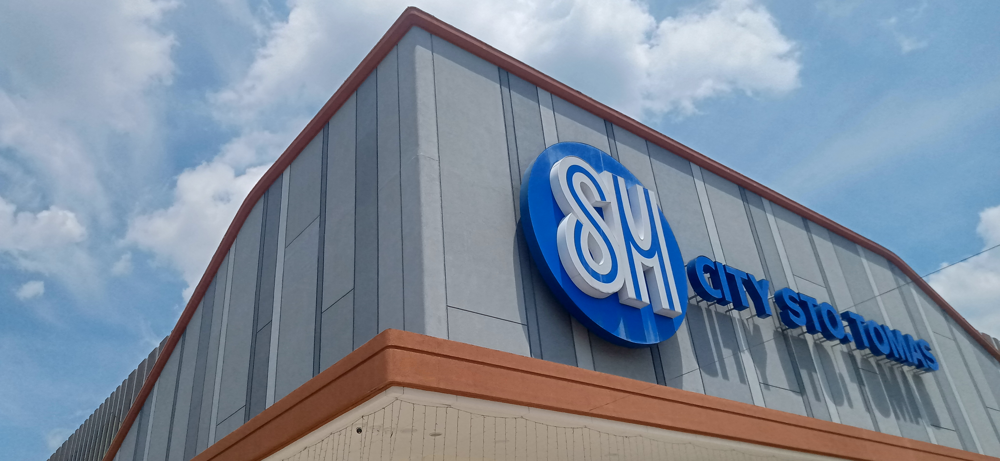
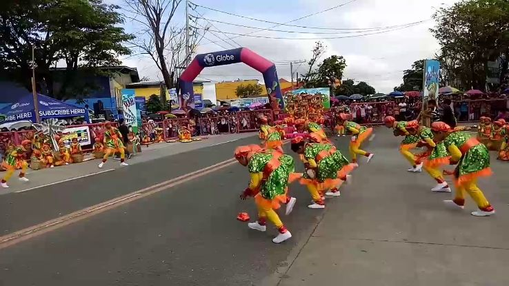
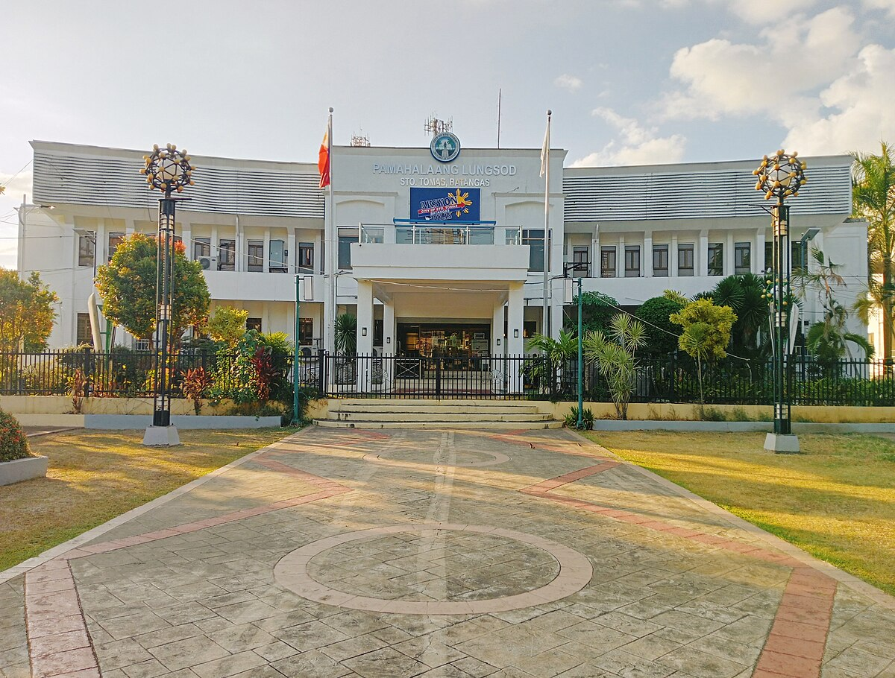
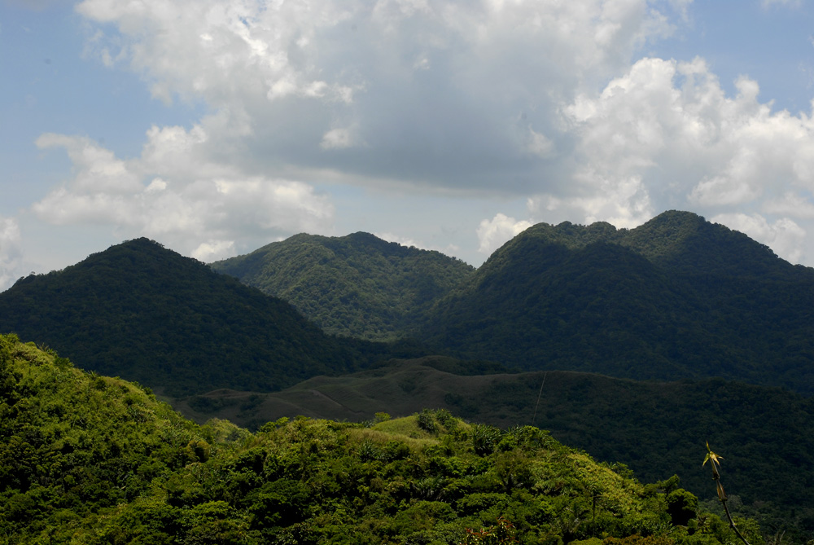
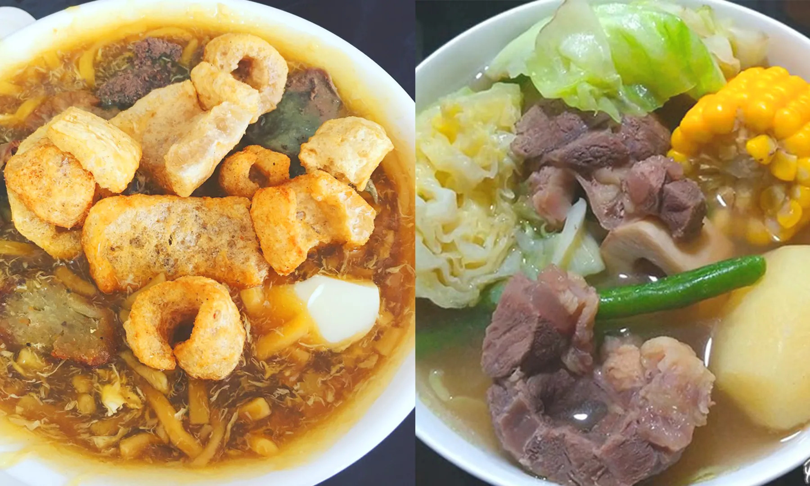
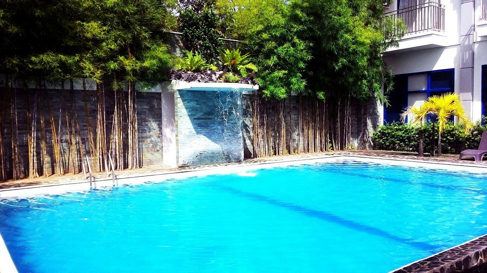

A first-class component city in the province of Batangas, Philippines.
"A city where heritage meets progress"


Nestled in the heart of Batangas province in the Philippines, the City of Santo Tomas is a vibrant and dynamic community known for its rich history, cultural heritage, and economic growth. Located approximately 85 kilometers south of Manila, Santo Tomas serves as a gateway to the southern regions of Luzon.
Established in 1578, Santo Tomas has deep historical roots, originally named after Saint Thomas Aquinas. The city played a crucial role during the Spanish colonial period, evident in its historical architecture and landmarks. The San Juan Bautista Church, built in 1860, stands as a testament to the city’s rich ecclesiastical heritage.

Santo Tomas is recognized as an emerging economic hub in Batangas, bolstered by its strategic location near major industrial parks, such as the Light Industry and Science Park and the First Philippine Industrial Park. The city is home to various businesses, contributing significantly to the local economy.

The residents of Santo Tomas, known as “Tomasinos,” are known for their warm hospitality and strong sense of community. The city hosts numerous festivals throughout the year, such as the “Mahaguyog” and the “Santo Tomas City Fiesta,” celebrating local traditions, food, and culture.

Tourists can explore historical sites like the San Isidro Labrador Church and local museums showcasing deep heritage.
Learn More
Offers stunning views of Mount Batulao, making it a great destination for hiking enthusiasts and nature lovers.
Learn More
Enjoy authentic Batangas cuisine, including rich Bulalo (beef bone marrow soup) and hearty Lomi noodles.
Learn More
Conveniently located near popular beach destinations in Nasugbu and Batangas City for a perfect getaway.
Learn MoreA vibrant platform created to showcase the rich culture, stunning landscapes, and hidden gems of this beautiful town. Designed by Roland Z. Regio, this portal serves as a comprehensive guide for locals and travelers alike. Explore breathtaking natural wonders like Manabu Peak, delve into historical significance at Museo ni Miguel Malvar, and enjoy the lively atmosphere of the Lifestyle Strip.
Join us in celebrating the charm of Santo Tomas, Batangas—where every corner tells a story, and every experience leaves a lasting memory.